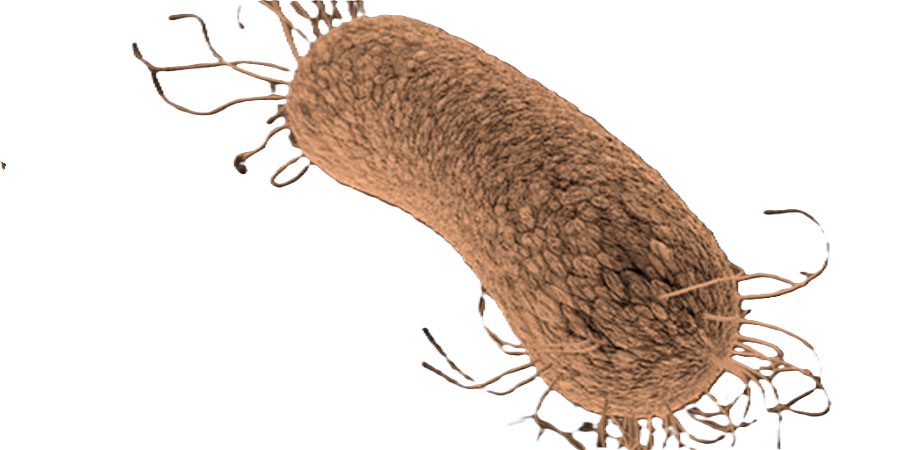
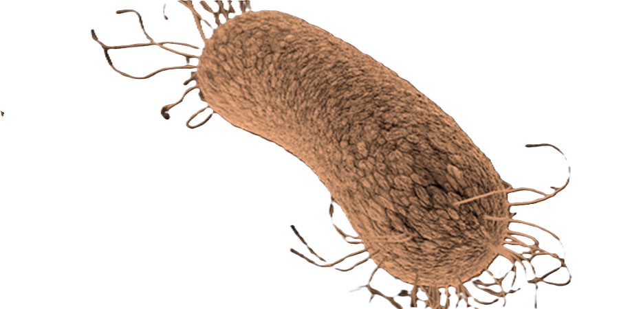

Descripción microbiológica
Pseudomonas aeruginosa es un bacilo gramnegativo recto o ligeramente curvo (0.5-1.0 µm x 1.5-5.0 µm), aerobio estricto con flagelo polar monotrico que le confiere movilidad. Presenta una membrana externa con LPS de bajo peso molecular y porinas específicas (OprD). Productor de pigmentos característicos: piocianina (azul-verdoso), pioverdina (amarillo-fluorescente) y piorrubina (rojo). Oxidasa-positivo, no fermentador de carbohidratos y capaz de crecer a 42°C. Las colonias en agar sangre son planas, irregulares y con halo hemolítico (hemólisis beta) tras 24 horas de incubación.
Características distintivas
- Tinción: Gram-negativo, aislado o en pares (no forma esporas).
- Metabolismo: Respiratorio estricto (utiliza >80 compuestos orgánicos como fuente de carbono).
- Resistencias: Intrínseca a muchos antibióticos (por bombas de eflujo y β-lactamasas naturales).
- Factores de virulencia: >50 identificados (exotoxinas, proteasas, sistemas de secreción).
Ecología y transmisión
Ubicuo en ambientes húmedos: suelo, agua (incluida destilada), vegetación y superficies hospitalarias (lavabos, respiradores). Coloniza humanos (5-15% de población sana en piel/fosas nasales). Se transmite por contacto directo, fómites o aerosoles de agua contaminada. Causa infecciones nosocomiales (neumonías asociadas a ventilación, quemaduras, UCI). Factores de riesgo incluyen neutropenia, fibrosis quística (CFTR ΔF508), quemaduras >30% SC y uso prolongado de catéteres.
Factores ambientales
- Supervivencia: Crece en agua destilada y resiste desinfectantes (cloro 1ppm).
- pH óptimo: 7.0-7.5, pero tolera rangos de 5.0-9.0.
- Biocidas: Sensible a glutaraldehído al 2%, peróxido de hidrógeno al 6% (30 min).
Mecanismos de patogenicidad
Su virulencia deriva de múltiples sistemas coordinados:
| Factor | Mecanismo | Efecto clínico |
|---|---|---|
| Exotoxina A (ToxA) | Inhibe síntesis proteica (similar a difteria) | Necrosis tisular |
| Sistema de secreción tipo III (T3SS) | Inyecta ExoU/S/T/Y | Citotoxicidad e invasión |
| Algínato | Forma biofilm mucoide | Persistencia en fibrosis quística |
Enfermedades clínicas
- Infecciones pulmonares: Neumonía necrotizante (ventiladores), colonización crónica en fibrosis quística.
- Infecciones de tejidos blandos: Ectima gangrenoso (neutropénicos), celulitis en quemaduras.
- Infecciones sistémicas: Bacteriemia (mortalidad 40-60%), endocarditis (usuarios de IVDA).
- Resistencias: MDR/XDR (resisten a carbapenémicos, colistina), productores de MBL.
Diagnóstico y tratamiento
Métodos diagnósticos:
- Tinción de Gram (bacilos gramnegativos) y cultivo (agar cetrimida para selectividad).
- Pruebas bioquímicas: Oxidasa (+), oxidación de glucosa, crecimiento a 42°C.
- PCR para genes de virulencia (exoU, exoS) y resistencias (blaKPC, blaNDM).
Terapia combinada (según sensibilidad):
- No MDR: Ceftazidima/cefepima + tobramicina.
- MDR: Meropenem + amikacina + colistina (en XDR monitorizar CMI).
- Inhalados: Tobramicina inhalada para fibrosis quística.
Prevención y control
- Higiene hospitalaria: Esterilización de equipos respiratorios, filtros HEPA.
- Profilaxis: Vacuna anti-PcrV (en investigación), inmunoglobulina hiperinmune.
- Vigilancia: Detección temprana de brotes por PFGE/MLST en UCIs.
- Biocontrol: Uso de fagos contra biofilms en infecciones crónicas.
Datos epidemiológicos
- Causa 10-15% de infecciones nosocomiales globales (2° lugar en UCIs).
- Prevalencia en fibrosis quística: 60-80% de adultos colonizados.
- Mortalidad por bacteriemia XDR: >70% a pesar de terapia combinada.